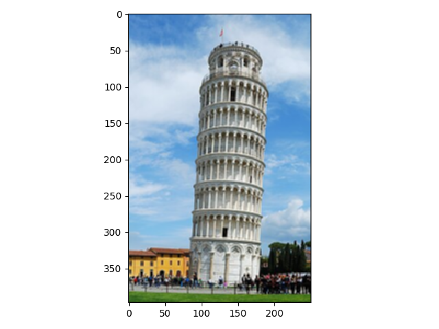
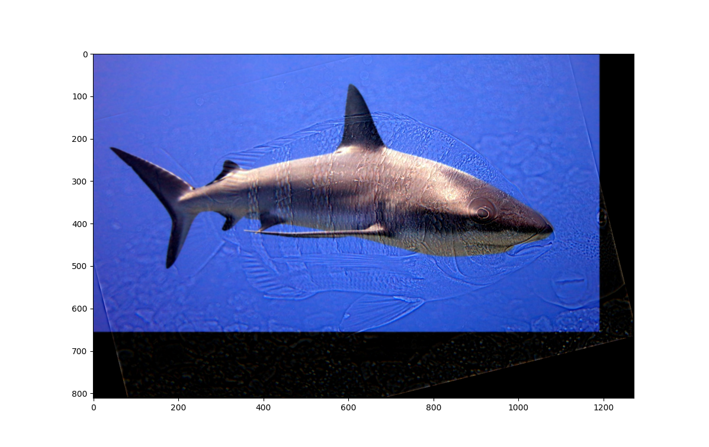
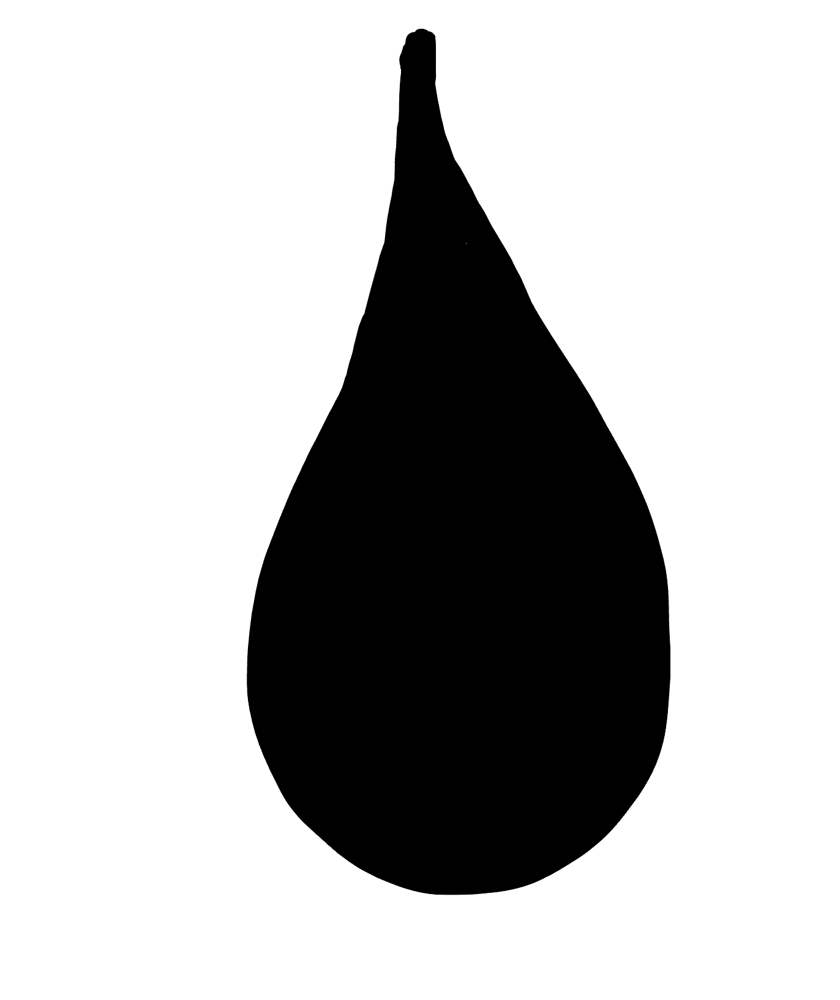

In this project we apply various filter/frequency domain techniques to images for fvarious functions
Convolution, Finite Difference, DoG
In this very first part we implement convolutions. Below we show the code block of our convolution implementation
and using it with a selfie and different filters.
implementing zero-padding
Convolution implementation: conv2d is the main function, where
we flip the filter and the apply cross-correlation
Original selfie
applying the box filter
applying the dx filter
applying the dy filter
Cameraman
We now apply some filtering techniques to the cameraman image.
Convolution with Dx
Convolution with Dy
Gradient Magnitude
Binarized edge filter. Dx and Dy are both applied to the image. We then
used a cut off threshold of 0.15.
We repeated the binarized edge process, except now we gaussian-filter the image first. The threshold is the same.
Due to the low-pass filter application, we get a lot less of the dots that gets scattered around the image.
If we combine steps and convolve the Gaussian with the combined (Dx, Dy) filter first and then convolve with the image,
we obtained the same image.
Sharpening
In this section we explore some image sharpening techniques. We note that image sharpening can be achived by adding
an image's high-frequency components to itself (i.e. emphasizing the edges). Here, we take a picture and get its
high-frequency componenets by subtrating from the original image the gaussian filtered image (subtracting away
the low frequencies). We then add it back to the high frequency picture. We were able to combine all this
into a single convolution operation on the original image. The resulting unsharp filter is equal to
2 - G, where 2 is the doubling filter, with the center entry being 2 and the rest of the entry being 0. G is the
Gaussian filter. We show some results below:
Sharped Taj image with the unsharp filter
Sharpened image of the chapel in King's College, Cambridge
Sharped Taj image with the unsharp filter. We noticed that the lines and edges are more accentuated
Sharpened image of the chapel in King's College, Cambridge. We have a similar effect as with the Taj image.
A good question is what is the effect of blurring an image first and then sharpening it? Will we get the same image?
Let's see the folloing images:
The original image of the Tower of Pisa

The Gaussian blurred image.
Blurred by Gaussian, then sharpened. Note that we did not recover the same clarity, despite becoming
clearer than the blurred version.
Hybrid Images
By overlaying and aligning the high frequencies of one image and the low frequencies of another image, we can obtain hybrid
images, where from afar, we see the image that is the source of the low frequencies, and from up close, we see the
image that is the source of the high frequencies. We show some results below. For low-pass-filtering the images, we used
the Gaussian filter. For high-pass filtering, we used the impulse filter.
Image 1: A shark
Image 2: A striped fish

A striped fish: Shark low pass, Fish high-pass. Low-pass gaussian sigma = 1, High-pass sigma = 3
Image 1: A horse
Image 2: A tiger
A tiger horse: Horse low pass, Fish high-pass. Low-pass gaussian sigma = 3, High-pass sigma = 1
Blending
We now experiment with multi-resolution blending. The method is relatively simple. Take two images that we wish to blend. We
then take a "filter" of 0 and 1's. All three are of the same size.
Where 0 represents areas we want to be taken from one image and 1 represents areas we
want to take from another image. We construct a laplacian and a gaussian stack of both image.
Correspondingly, we construct a gaussian
pyramid of the filter. At each layer, we mix the laplacian stack layers of the two image according to the gaussian stack
layer of the filter. This is done by entry-wise multiplying one image by the filter and entry-wise multiplying another image
by (1 - filter), where 1 is the matrix of all 1s. We then add the two products together. We do this at each layer of the
stack, and sum up results from all layers. Finally, we perform a similar entry-wise multiplication and sum using the
final gaussian stack layer of the two images and the filter. We add this result back to the sum of the "mixed laplacians."
This gives us the blended images shown below. Before doing that, we also did some frequency analysis of the example
oraple image. I.e. we try to replicate the figure shown to us on the project page by constructing a laplacian pyramid.
Apple at laplacian stack layer 0
Orange at laplacian stack layer 0
Oraple at laplacian stack layer 0
Apple at laplacian stack layer 2
Orange at laplacian stack layer 2
Oraple at laplacian stack layer 2
Apple at laplacian stack layer 4
Orange at laplacian stack layer 4
Oraple at laplacian stack layer 4
Apple at stack layer 4
Orange at laplacian stack layer 4
Oraple at laplacian stack layer 4
The image blended from the original apple and orange that we produced.
We also blended some other images using some irregular filters:
Original strawberry image
Original kitchen image
Heart-shaped filter we used
The image blended from the original starwberry and the kitchen using the heart filter
Original image of a wave painting at the National Gallery of Art
Image of an eye

The droplet filter we used
An eye with waves
Analysis image on the stawberry wall image (might have to zoom in a little):